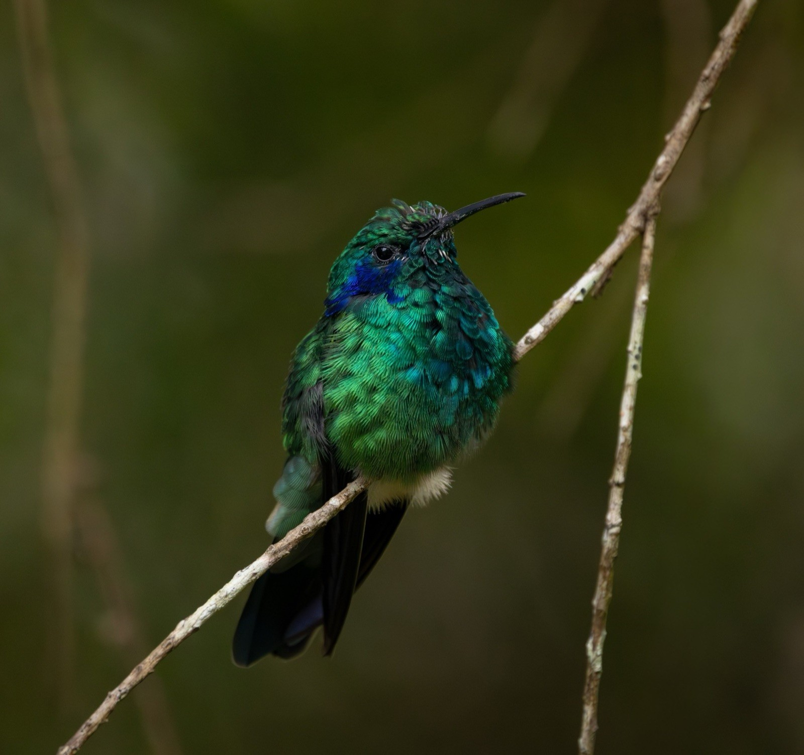

Colibrí Orejas Violetas Menor
Colibri cyanotus (Bourcier, 1843)
Inglés: Lesser Violetear
El Colibrí Orejas Violetas Menor (Colibri cyanotus) es un colibrí de la subfamilia Polytminae (mangos). Pesa alrededor de 5.9 g y su pico mide 23.7 mm. Vive en Costa Rica, Colombia, Ecuador, Perú, Panamá, Venezuela y Bolivia. Su estado en la Lista Roja de la UICN es No evaluado.
Verlo en el explorador Página en eBird ↗
De un vistazo
- Peso
- 5.9 g, más o menos 6 clips
- Pico
- 23.7 mm
- Vive en
- Bosque
- Movimientos
- Se queda en su zona todo el año
- Lista Roja
- No evaluado
Su lugar en la familia
- Familia Trochilidae colibríes
- Subfamilia Polytminae mangos
- Género Colibri
Dónde vive · 9 países
- Costa Rica
- Colombia
- Ecuador
- Perú
- Panamá
- Venezuela
- Bolivia
- Canadá visitante raro
- Estados Unidos visitante raro
Otros del género Colibri
- Colibrí Orejas Violetas Mexicano Colibri thalassinus
- Colibrí Pardo Colibri delphinae
- Colibrí Rutilante Colibri coruscans
- Colibrí Orejimorado Colibri serrirostris
Fuentes
Nombres: eBird/Clements Checklist (Cornell Lab of Ornithology), con los nombres en español de eBird México. Grupos: Dickinson y Remsen (2013) y McGuire et al. (2014); los nombres de los grupos en español son traducciones de este sitio. Peso, pico, hábitat y movimientos: AVONET (Tobias et al. 2022, CC BY 4.0). Países: BirdLife International DataZone, comparado con registros de eBird a través de GBIF. Estado y tendencia en la Lista Roja: BirdLife International, la autoridad de la Lista Roja de la UICN para las aves.